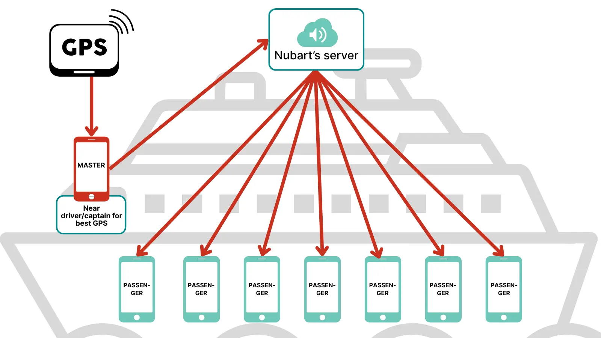

Nubart MOTION Demo — Phase 2
Remote control setup — step-by-step instructions
Passenger Demo QR Code
Scan this with the second device to open the audio guide as a passenger.
Master Smartphone Login
Use this on the master smartphone to access the remote control panel.
Step 1 — First time only: create your account
Use this link to set your password. You only need it once.
Step 2 — Every time: log in here
Bookmark this address on the master smartphone for quick access before each journey.

Why remote control instead of individual GPS?
- No permissions needed from passengers. GPS on smartphones requires browser location permissions, which are confusing — especially on iPhones. With a master smartphone, passengers don't need to grant anything.
- Works even when passengers switch apps. Passengers may take photos, check messages, or briefly lock their screen. Tracks still trigger correctly via the master smartphone regardless.
- More consistent GPS accuracy. A single, well-positioned master device with a good GPS chipset is far more reliable than depending on dozens of different passenger phones.
Recommended Equipment & Browsers
GPS accuracy depends heavily on the device used. For the master smartphone, use a model with a reliable GPS chipset (e.g. Samsung Galaxy S23 or equivalent). Avoid budget models or older iPhones for this role.
- Master smartphone (Android): use Chrome
- Master smartphone (iPhone): use Safari
- Passenger device: any browser will work — passengers do not use GPS
Set Up the Passenger Device
On the Passenger device, scan the QR code at the top of this page (or tap the link below it).
If the demo has multiple languages, select your preferred language when prompted.
You do not need to grant any location permissions on this device. Just keep the browser open and the screen active.
Log In on the Master Smartphone
On the Master smartphone, open the login link shown at the top of this page. If this is your first time, use the registration link to set your password first, then log in.
Once logged in:
- Tap Remote Control in the menu.
- Select your tour from the list.
- Keep this screen open for the entire test — do not navigate away or lock the screen.
Testing Manual Remote Control
If your demo is configured for manual remote control, you trigger each track yourself from the master smartphone.
- On the Master smartphone, tap any track name in the Remote Control screen.
- On the Passenger device, that track should start playing automatically in the selected language.
- Tracks that have already been sent will change colour on the master smartphone screen.
Testing GPS-Triggered Remote Control
If your demo is configured for GPS-triggered remote control, no manual action is needed. The master smartphone reads its own GPS position and triggers tracks automatically when the vehicle crosses the predefined points.
- Place the Master smartphone at the highest point of the vehicle, near a window, connected to power.
- Keep the Remote Control screen open and the screen unlocked.
- Run your route. Tracks should play automatically on the Passenger device at the right moments.
- On the master smartphone, tracks change colour once they have been sent.